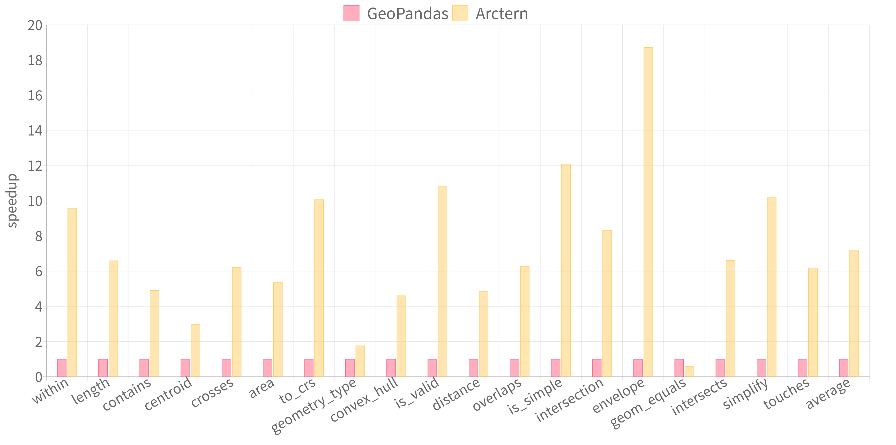

欢迎访问 Arctern 文档¶
Arctern 是一个快速可扩展的时空数据分析框架。
可扩展性是构建生产环境下的数据科学管道的关键和主要挑战。为了应对这一挑战，我们推出了开源的时空分析框架 Arctern 以提高端到端的数据科学性能，并期望从两个方面提高 Arctern 在时空数据分析领域的可扩展性：
从单机到集群和云，跨平台实现一致的数据分析和处理接口。
跨越数据科学管道的不同阶段，实现丰富且一致的算法和模型，包括轨迹处理、空间聚类和回归等。
我们计划在 GeoPandas 接口的基础上构建可向上和向外扩展的 GeoDataFrame 和 GeoSeries 数据结构，并面向 GeoDataFrame 和 GeoSeries 对象开发时空数据分析算法。所开发的算法在不同的执行环境中将保持一致的使用方法。
现在，我们已经实现了一种有效的多线程 GeoSeries 数据结构，并且正在开发它的分布式版本。在最新的 0.2.0 版本中，Arctern 的处理速度比 GeoPandas 快 7 倍。详细的评估结果如下图所示：
此外，我们正在开发实验性的 GPU 加速功能，以加速时空数据的分析和渲染。目前，Arctern 提供了 6 种 GPU 加速的渲染方法和 8 种空间关系操作，其性能优于基于 CPU 的同类产品近 36 倍。
在接下来的几个版本中，我们的团队将专注于以下几个方面：
基于 Spark 开发 GeoSeries 的分布式版本。自 Arcern 发布预览版以来，它一直与 Spark 3.0 同步开发。Spark 支持 GPU 调度和基于列的处理，高度吻合我们对高性能时空数据处理的想法。因此，Koalas 接口被引入 Arctern 框架以助力 Arctern 在 Spark 上实现一致的 GeoDataFrame 和 GeoSeries 接口。
丰富我们的时空数据分析算法集。在项目的早期阶段，我们将专注于 KNN 搜索和轨迹分析。